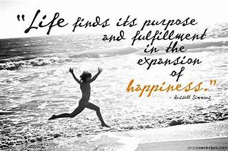
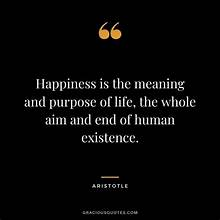
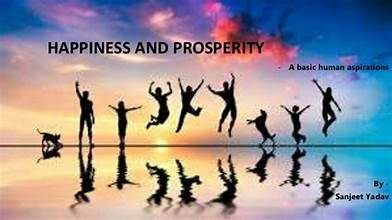
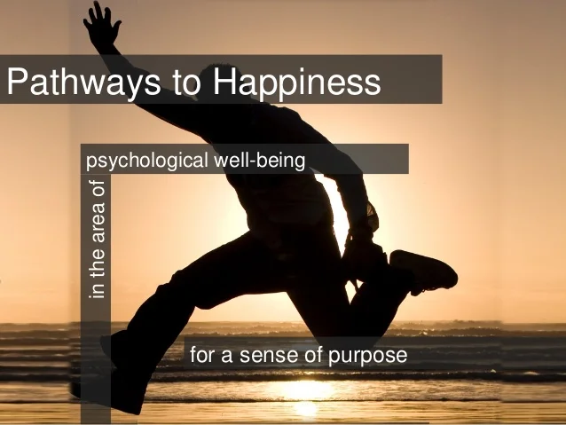

Seek Purpose and Happiness:
Seeking purpose and happiness is a fundamental human quest, an aspiration that drives us to find meaning and contentment in our lives. While these two concepts are closely intertwined, they can manifest differently for each individual. Purpose often involves a sense of direction, a feeling that one's life has a greater meaning or contribution. Happiness, on the other hand, represents a state of well-being and joy in the present moment.

Finding purpose can provide a guiding light, helping individuals set meaningful goals and make choices aligned with their values and passions. It often involves identifying one's strengths and seeking opportunities to use them for a greater good, whether that's through personal relationships, career, or community involvement. In essence, purpose can give life a sense of fulfillment and significance.

Happiness, on the other hand, is about being content with the present, appreciating the simple joys, and nurturing positive emotions. It can be found in moments of connection with loved ones, in personal achievements, or in the beauty of the world around us. Cultivating happiness often involves practices like gratitude, mindfulness, and self-compassion.

Both purpose and happiness are deeply personal pursuits, and the journey to find them may evolve over time. However, they are essential to a life well-lived. The pursuit of purpose and happiness can create a sense of balance and well-being, driving individuals to lead fulfilling lives that positively impact not only themselves but also those around them.
